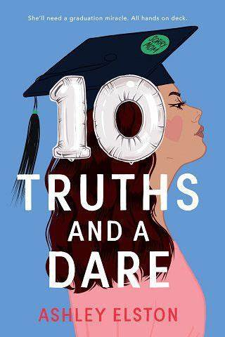
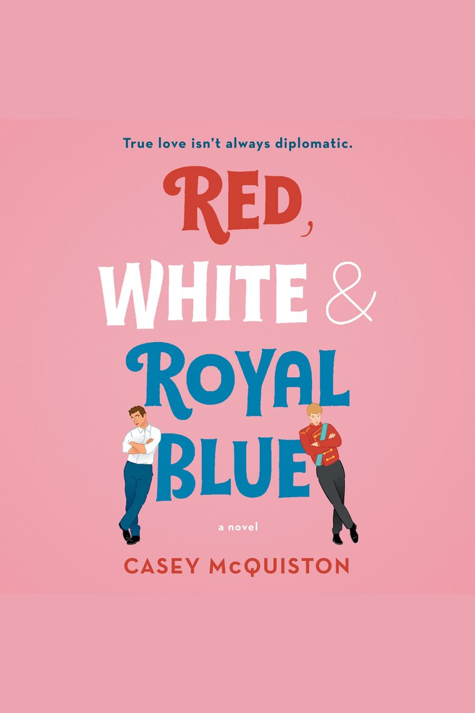
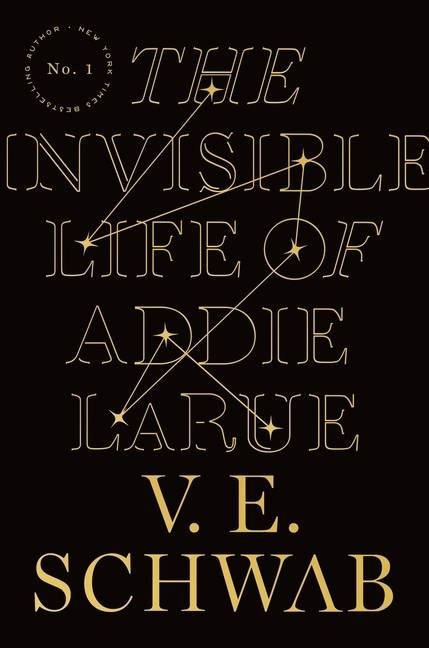

10 truths and a dare, Ashley Elston
Het plot is heerlijk luchtig en een tikkeltje cheesy, op een fijne manier. Dit is echt zo’n voorbeeld van ‘aaarrrgh waarom communiceren deze mensen niet gewoon met elkaar’ zoals je in veel films en boeken vindt. Maar ja, als iedereen gewoon alles eerlijk zou zeggen, dan was er geen plot. En bovendien: tieners doen nou eenmaal zo, dus vanuit Olivia gezien is alles heel logisch. Heel erg veel diepgang zit er niet in het verhaal; je kan wel raden waar het heen gaat, wie er een setje worden en wat het einde is. Maar dit is ook helemaal geen verhaal voor plottwists, grote geheimen of ingewikkelde verhaallijnen. Heel mooi is het nog dat Elston dit boek heeft opgedragen aan alle eindexamenklassen van dit jaar.

rood, wit en koningsblauw, Casey McQuiston
‘Rood, wit & koningsblauw’ is heerlijk romantisch en zit boordevol humor. De roze kaft zette me op een dwaalspoor. Hierdoor dacht ik dat het vol clichés zou zitten en zoetsappig zou worden, maar dat werd het gelukkig niet. Het is gewoon een heel leuk verhaal met een mooie boodschap. De relatie tussen Alex en Henry is de drager van deze roman. Het is bijzonder, anders dan anders en ontzettend origineel. De combinatie Henry en Alex werkt heel mooi. ‘Rood, wit & koningsblauw’ is ondeugend, stout en het is gewoon een heerlijk verhaal. Naast het ultieme romantische gevoel is de boodschap in het verhaal een mooie toevoeging. Soms spatten de emoties van de pagina’s af. Het einde is heel treffend en het sluit het verhaal op een mooie manier af!

The invisible life of Addie Larue, Victoria Schwab
In dit zeer originele verhaal slingeren we heen en weer tussen 1714 en 2014. We starten in een dorpje in Frankrijk, met Addie reizen we vervolgens mee via Parijs, Italië en Engeland om uiteindelijk in New York te arriveren. Daarmee hebben we dan 300 jaar overbrugd. Met haar prachtige, indringende verteltrant slaagt Victoria Schwab er wonderwel in om die 300 jaar met elkaar te blijven verbinden. We houden voortdurend het overzicht, de samenhang tussen Addie’s ervaringen in al die jaren, al die eeuwen. Het is ontroerend, heftig, ongelofelijk en pijnlijk om getuige te zijn van haar onmacht en eenzaamheid, maar ook van haar verzet tegen haar lot, haar doorzettingsvermogen en koppigheid. De rode draad in het verhaal, haar relatie met Luc, zorgt voor veel verrassingselementen.